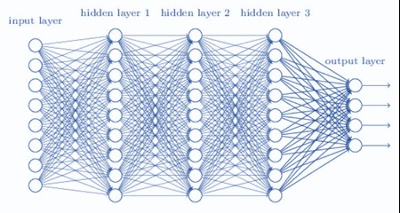
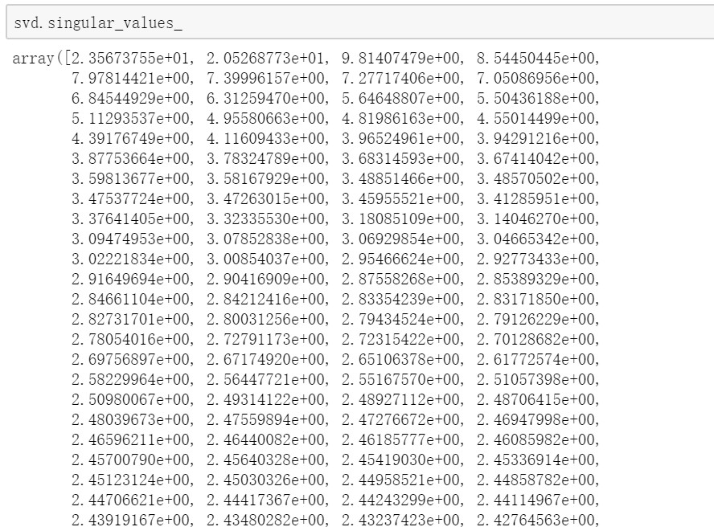

Fake News: Creating and Detecting

Brief Introduction
Fast speed and high-precision have become the hottest pursuits in the era of intelligence. Most found the convenient network has brought in more news rolling on various electronic screens, with personal opinions occupying the whole space, in terms of information publicity. Users are losing their sense and reason owing to the deterioration of information ambiguity. Plenty of official or personal media are spreading the news content that can't be simply distinguished from fake, either for certain purposes or without judgment. Some of the bot accounts controlled by human are also in participant with confusing behaviors or obscure words. The overflow of fake news has reached its climax especially after the US election in 2016.
Researchers from academia has explored the detection on the authenticity of news from online social network based on algorithms and content. Basic methods comprise text analysis, by segmenting posts of news text, title and media source; sentiment analysis, by categorizing words from comments into positive/neutral/negative ones with different value assignments; similarity analysis, by collecting personal description, account activity and friends/followers ratio for bot detection; and so on. TFIDF or Word2Vec are mostly used to convert textual features into vector matrix, combined with numeric features for model training. Traditional machine learning algorithms like logistic regression, support vector machine, random forest, etc. can turn out a nice accuracy outcome, while neural network from deep learning frameworks can bring out better performance on fake news detection, namely Convolutional Neural Network(CNN), Recurrent Neural Network(RNN), Generative Adversarial Network(GAN), etc.
In 2019 OpenAI has proposed GPT-2 that can generate illogical articles, essays and fake news automatically. By analyzing semantics and extracting words that have larger probability such as qualifiers and prepositions, GPT-2 will create and spread some strange fake news if parameters are properly set.
Detailed Examples
Datasets from popular social platform are frequently used in fake news detection, like Twitter, Facebook, Reddit, etc. Convenient APIs are provided for developers to collect entries based on time periods, keywords, specific users and so forth, and finally integrated into database after basic cleaning. The next step is data preprocessing, including text segmentation by RegEx or tokenizer(e.g. TweetTokenizer) in NLTK, stemming and lemmatization for words of different tense, and stop words filtering. In the third step developers may convert the whole text into numerical values for text mining or sentiment computing, with each feature corresponding to a constant value. Most of the time we may reduce the dimensionality for high efficiency and low error in computing, especially for neural network models.
Problem
- There haven’t been concrete conclusions on the factors of fake news detection, as bias and errors are unavoidable when the AI system is working. It’s hard to control the parameters or criteria during the identification.
- More and more fake news generators may crop up frequently since the first one(GPT-2) was put forward just a year ago. By creating fake news more easily, AI may intensify the current situation and manipulate public opinions with the development of algorithms.
Possible Solution
To better identify the fake news we have to build particular models with improved algorithms, if possible. Semantic recognition requires higher standard and better understanding for machines instead of simply reading and interpreting words into term-frequency values without context. News releases are now elaborated in an ambiguous tone mixed with various knowledge background, therefore becoming seditious for the public. Moreover, every time before we wish to detect fake news using the frameworks, we need to make sure the amount of training sets is ENOUGH large to minimize the error rate with proper regularization measures to escape overfitting.